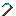

Коса
Сводка
Коса — ручной инструмент Ala Industrial для быстрого клиринга декоративной растительности. Правый клик по блоку скашивает всю подходящую растительность (листва, трава, цветы, папоротники, грибы, лианы, корни, саженцы) в плоской прямоугольной области перед игроком, роняя обычный ванильный дроп — как если бы игрок ломал каждый блок вручную. Восемь тиров материала (дерево → камень → медь → железо → золото → закалённое железо → алмаз → незерит) увеличивают область и лимит блоков за взмах. Коса — это quality-of-life инструмент для строительства и сбора декора; она не заменяет топор, мотыгу или автоферму: первая версия намеренно не собирает урожай #minecraft:crops.
Энергия
Это обычный ручной инструмент — не подключается к энергосети мода и не тратит EU/FE.
| Поле | Значение |
|---|---|
| Роль | none (ручной инструмент, не связан с EU/FE-системой) |
Инвентарь
Предмет. Стак 1 (инструмент с прочностью). Несёт data-компонент minecraft:tool через Item.Properties.hoe(material, -2.0f, -1.0f), но это не HoeItem — коса не вспахивает землю правым кликом, а выполняет свой AOE. Ремонт — материалом соответствующего тира (ванильные ремонтные теги; закалённое железо — через #alaindustrial:tempered_iron_tool_materials).
Свойства блока
Не применимо (предмет).
Характеристики (баланс)
Область — плоский прямоугольник ширина × глубина × высота перед игроком: глубина идёт вперёд по взгляду, ширина (всегда нечётная — есть центральная линия) — по перпендикулярной горизонтальной оси, высота всегда 3 (слой клика ±1). Центр — кликнутый блок. Прочность и скорость добычи берутся из ванильного ToolMaterial; числа в коде (/ModItemsNeoForge через ScytheItem.Profile), не в `C.
| Тир | Материал | Область (Ш×Г×В) | Макс. блоков/взмах | Прочность | Зачар. |
|---|---|---|---|---|---|
| Дерево | ToolMaterial.WOOD | 3×2×3 | 12 | 59 | 15 |
| Камень | ToolMaterial.STONE | 3×3×3 | 18 | 131 | 5 |
| Медь | ToolMaterial.COPPER | 3×3×3 | 24 | 190 | 13 |
| Железо | ToolMaterial.IRON | 5×3×3 | 30 | 250 | 14 |
| Золото | ToolMaterial.GOLD | 5×3×3 | 30 | 32 | 22 |
| Закал. железо | ModToolMaterials.TEMPERED_IRON | 5×4×3 | 40 | 350 | 16 |
| Алмаз | ToolMaterial.DIAMOND | 5×5×3 | 50 | 1561 | 10 |
| Незерит | ToolMaterial.NETHERITE | 7×5×3 | 70 | 2031 | 15 |
Золото — намеренный side-grade: площадь как у железа, но хрупкое (32 прочности) и максимально зачаровываемое (22) — ванильная философия золота (с Unbreaking/Mending раскрывается). Медь — скромная ступень между камнем и железом. Незеритовая коса огнестойкая (.fireResistant), как вся ванильная незеритовая экипировка. Профиль атаки — как у мотыги (hoe(material, -2.0f, -1.0f)): низкий урон, инструмент боевым не задуман.
Целевые блоки
Скашиваются только блоки из тега alaindustrial:scythe_harvestable (data/alaindustrial/tags/block/scythe_harvestable.json): под-теги: #minecraft:leaves, #minecraft:flowers (включает #small_flowers), #minecraft:saplings, #minecraft:cave_vines; трава/папоротники: short_grass, tall_grass, fern, large_fern, dead_bush, bush, firefly_bush, short_dry_grass, tall_dry_grass, leaf_litter; прочее: moss_carpet, pale_moss_carpet, brown_mushroom, red_mushroom, vine, glow_lichen, hanging_roots, nether_sprouts, warped_roots, crimson_roots. Не входят (осознанно для v1): #minecraft:crops (отдельная агро-механика), стебли тыкв/арбузов, сахарный тростник, кактус, бамбук, келп (фермерство/ресурсы), стволы, земля, мох-блок (ландшафт), а также вода/seagrass. Через #minecraft:flowers транзитивно попадает chorus_flower — принято как декоративный блок.
Рецепты
Все восемь крафтятся на верстаке по единой кастомной схеме (3 материала тира + 2 палки) — намеренно отличной от ванильной мотыги, т.к. коса сильнее и имеет AOE:
MM.
.SM
.S.Материал M по тирам: #minecraft:planks, minecraft:cobblestone, minecraft:copper_ingot, minecraft:iron_ingot, minecraft:gold_ingot, alaindustrial:tempered_iron, minecraft:diamond, minecraft:netherite_ingot; S — minecraft:stick. У каждого тира есть recipe-advancement (advancement/recipes/misc/scythe_*.json), поэтому рецепт появляется в книге рецептов при подборе материала.
Поведение
Триггер: только правый клик useOn, только из основной руки. Shift/secondary use и off-hand возвращают PASS (обычное взаимодействие не блокируется). Разрушение: через ServerPlayerGameMode.destroyBlock(pos) — канонический «игрок добыл блок» путь. Отсюда бесплатно: tool-aware дроп (Fortune/Silk Touch работают), корректная обработка double-plant (вторая половина гаснет без дюпа), автоматический износ, creative-паритет (без дропа и износа), учёт adventure/spawn-protection, и срабатывание событий ломания обоих лоадеров (Fabric PlayerBlockBreakEvents / NeoForge BlockEvent.BreakEvent) — protection-моды могут отменить каждый блок. Прочность (по ванильным правилам инструмента): блоки с hardness 0 (короткая трава, папоротник, цветы) ломаются мгновенно и износ не тратят; блоки с hardness > 0 (листва 0.2) тратят 1 прочности за блок. Косить траву можно бесконечно; листву — по прочности тира. Лимит: не больше макс. блоков/взмах тира; при поломке инструмента посреди взмаха проход останавливается (не разрушает сверх доступной прочности). Кандидаты сортируются по расстоянию от клика — кликнутый блок ломается первым, лимит и износ детерминированы. Звук: один свист-срез alaindustrial:scythe_swing за успешный взмах (не за каждый блок), источник PLAYERS, лёгкая вариация питча. Эффект: над скошенной областью — росчерк частиц minecraft:sweep_attack, разлёт по ширине/глубине косы (тем больше, чем больше скошено). Ограничение loot-контекста: нет — путь gameMode.destroyBlock даёт полноценный дроп с инструментом (в отличие от Level.destroyBlock, который был бы с пустым tool и без чар).
Прогрессия
Тир: none (ручной инструмент, не привязан к энергетическим тирам мода). Восемь материальных ступеней параллельны ванильным мотыгам; в креативе каждая коса стоит сразу после мотыги своего тира (вкладка «Инструменты»). Область и лимит растут по тирам; золото — хрупкий зачаровываемый side-grade, закалённое железо — ступень между железом и алмазом.
Совместимость
Просмотрщики рецептов: JEI, REI, EMI — как обычные предметы с крафтом. Зачарования: коса в #minecraft:hoes, поэтому через цепочку #minecraft:enchantable/* доступны efficiency/unbreaking/fortune/silk_touch/mending. Fortune усиливает дроп (путь разрушения tool-aware); Efficiency на мгновенный AOE не влияет. Protection/adventure: коса не обходит ванильные ограничения и события ломания лоадеров.
Баланс
См. таблицу выше. Дизайн-цель: «удобный клиринг декора, не заменяющий топор/мотыгу/автоферму». См. .
Связанное
Инструменты из закалённого железа — паттерн data-driven инструментов мода и материал TEMPERED_IRON. Ванильные мотыги — базовая линия материалов и позиция в креативной вкладке.